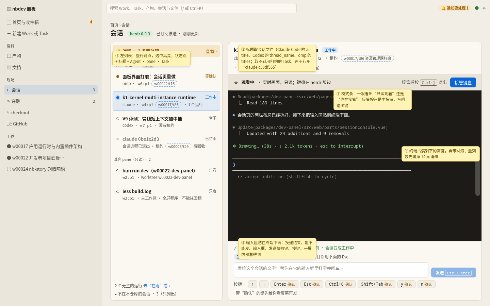
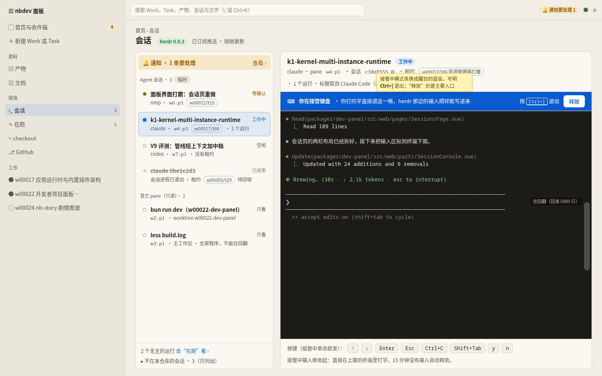
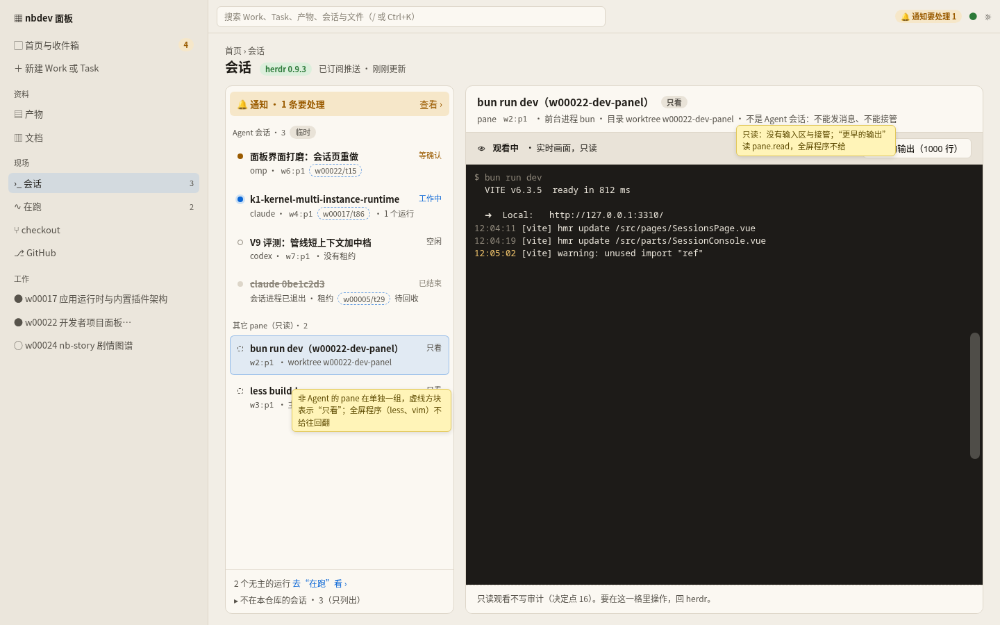
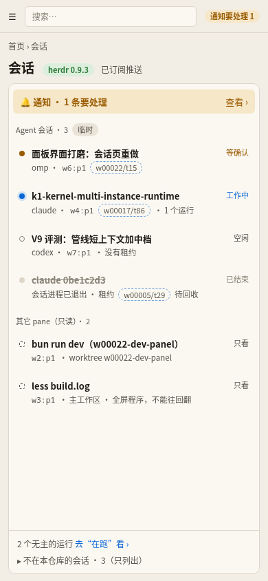
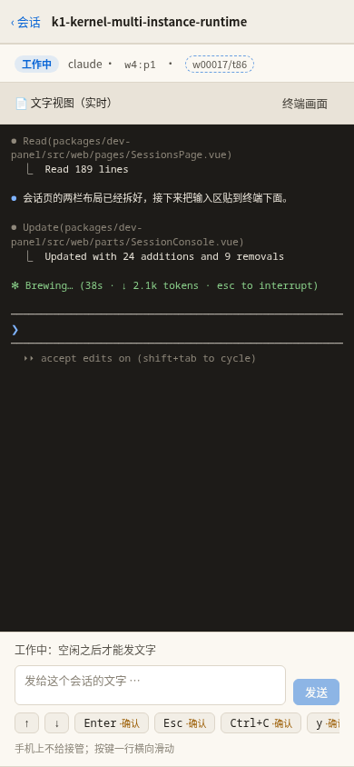

会话页重新设计
t15 阶段 4 第 3 批。线框稿里的会话名、Task、终端画面都是示意用的假数据。可交互的线框稿：wireframe.html（地址后面换成 #watch、#control、#pane、#phone-list、#phone-detail 看各种状态，加 -notes 带标注）。
要点
- 铺满的两栏：左边会话列表，右边详情，各自滚动，页面本身不滚；终端占满剩下的高度，输入区不会被挤出屏幕，滚轮也不会被终端吞掉。
- 不再有单独的“屏幕与输入”：列表每一行整行可点、选中高亮；选中后右边直接是终端和输入区，同一屏里能看、能打字。
- 列表行：状态点、标题、状态字；第二行是 Agent、pane 号、所属 Task、运行数。按“等确认、工作中、空闲、已结束”排序。没有 Agent 会话的 pane 单独一组“其它 pane（只读）”。
- 模式条：观看时浅底一行“观看中 · 只读”，主按钮“接管键盘”，旁边写“接管后按 Ctrl+] 退出”；接管时整条换成醒目的蓝底“你在接管键盘”。
- 输入区贴在终端下面：投递结果、能不能发和原因、输入框与“发送”（按钮上写 Ctrl+Enter，Enter 换行）、按键一行（要先确认的键带“确认”标记）。
- 会话标题（已定）：读本机会话文件里 Agent 起的标题；读不到用租约的 Task，再不行才用
claude c38df555这样的短号。 - 只读观看（已定）：本仓库里任意 pane 都能看，非 Agent 的 pane 可以往回翻；发消息和接管仍只对 Agent 会话。Agent 会话这一批只靠终端回滚。
- 手机：先是整屏列表，点一行进整屏详情，后退回列表；不给接管。
桌面 1440：观看中（带标注）

桌面 1440：接管中

桌面 1440：非 Agent 的 pane，只读

手机 390


请你定
会话页按这份设计稿实现吗
选“改了再给我看”时，在说明里写要改什么。
没选会话时自动选中最需要看的那个
主 Agent 已按推荐定；不同意就选“否”，那样右栏只写一句引导。手机上都不自动进详情。
通知放在左列表最上面一行
主 Agent 已按推荐定；不同意就选“否”，那样保持在页面顶部，会挤占终端的高度。